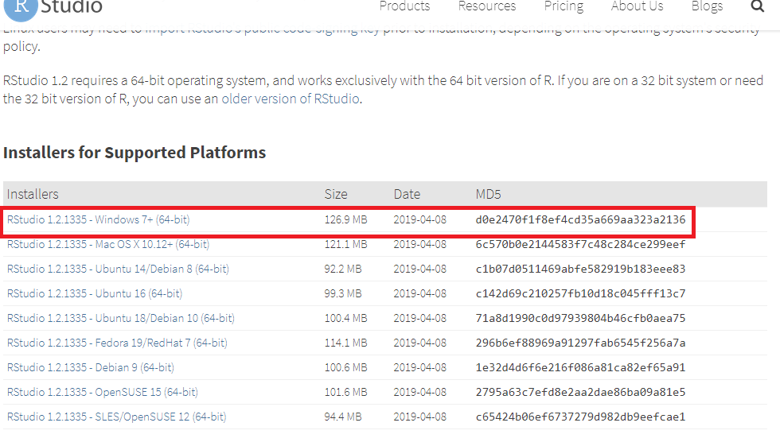
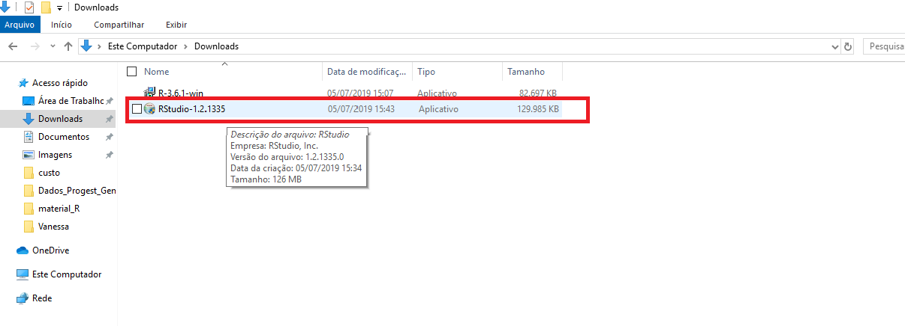
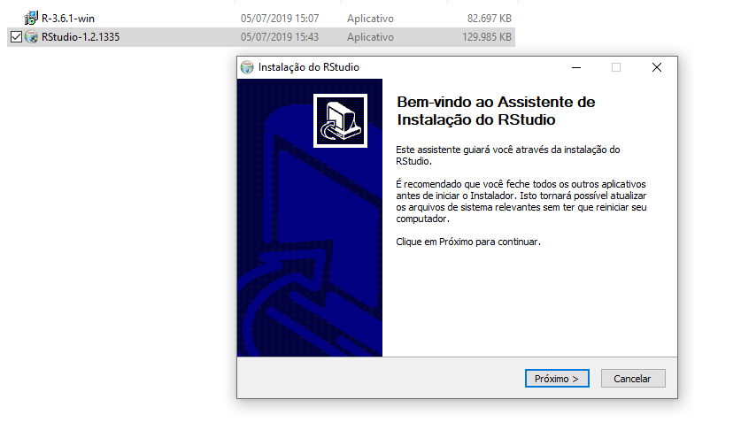
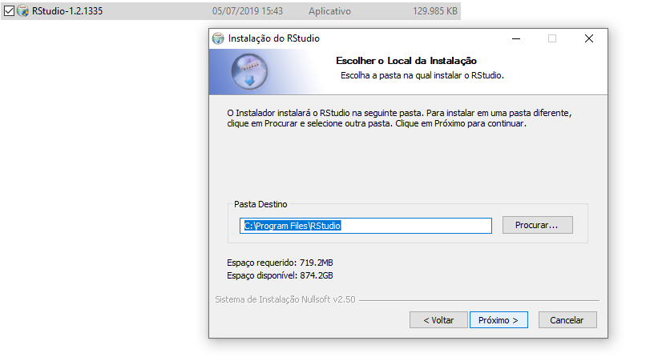
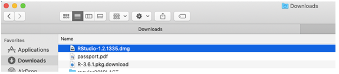
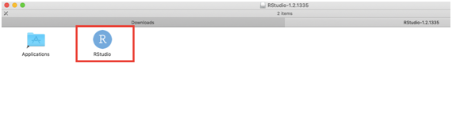
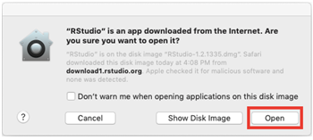
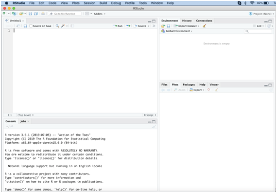
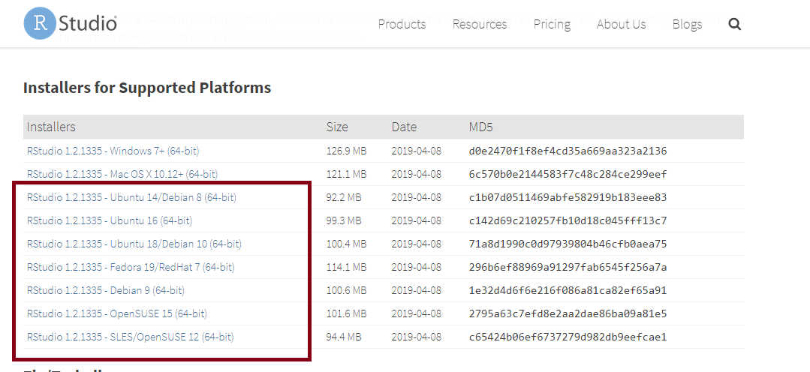

3 Instalação RStudio
O RStudio é um conjunto de ferramentas integradas projetadas (IDE - Integrated Development Environment) da linguagem R para auxiliar na produtividade ao utilizar o R.
3.0.1 Para Windows
- Entre neste link e clique em Download como em destaque na Figura @ref(fig:rswindows1).
- Clique no instalador em destaque na Figura @ref(fig:rswindows2).

- Ao clicar no link, será feito o download do instalador e salvo na pasta de interesse. No caso da Figura @ref(fig:rswindows3), o instalador está na pasta Downloads. Dê dois cliques no botão esquerdo no arquivo para iniciar o download do arquivo.

- Clique em “Próximo” nas próximas janelas e na última “Instalar”, como nas Figuras @ref(fig:rswindows4) a @ref(fig:rswindows6).



- Pronto, a instalação será iniciada, como na Figura @ref(fig:rswindows7).

3.0.2 Para MAC
- Entre neste link e clique em Download como em destaque na Figura @ref(fig:rsmac1).
- Clique no instalador como destacado na Figura @ref(fig:rsmac2).

- Ao clicar no link, será feito o download do instalador e salvo na pasta de interesse. Caso você não tenha configurado a pasta de descargas, o instalador ficará na pasta “Downloads”, como na Figura @ref(fig:rsmac3).

- Clicando duas vezes no arquivo “RStudio-1.2.1335.dmg” (versãos mais atual do RStudio), será feita a descarga do mesmo abrindo a janela conforme na Figura @ref(fig:rsmac4). Clique no aplicativo de RStudio destacado em vermelho também na Figura @ref(fig:rsmac4).

- O instalador pode perguntar se está seguro que o aplicativo será baixado da internet e clique em “Open” (Figura @ref(fig:rsmac5)).

- Pronto! Imediatamente abre o RStudio, como na Figura @ref(fig:rsmac6), e você já pode utilizá-lo.

3.0.3 Para Linux
- Entre neste link e clique em Download como em destaque na Figura @ref(fig:rslinux1).
- Clique no link referente à distribuição utilizada (Figura @ref(fig:rslinux2)).
